Reference
Referenceregistered source/coarse evidence under the comparison camera同一对照相机下的注册粗模/参考证据
The model is the variable under test. The harness around it — an evidence compiler, a Blender/Python action space, deterministic validators, and a filesystem memory — is the method.
模型是被研究的变量；围绕它的 harness——证据编译器、Blender/Python 动作空间、确定性验证器与文件系统记忆——是方法。
Can one general-purpose reasoning model work as a long-horizon 3D engineering agent: solve heterogeneous component-level reconstruction tasks, revise its own hypotheses when evidence contradicts them, and compose task outputs into a persistent, evolving industrial digital twin?
一个通用推理模型能否充当长时程三维工程智能体：完成异构的部件级重建任务，在证据否定其假设时修改假设，并把任务输出组合成持续演化的工业数字孪生？
* Model/reasoning configuration is owner-confirmed experimental metadata; the inspected historical batch logs do not freeze model identifier or reasoning effort. Geometry baseline: D38.2; D40 is a presentation-only layer; research endpoint: D41.
* 模型与推理强度属于项目负责人确认的实验元数据；所检查的历史批次日志未独立冻结模型标识或推理强度。几何基线：D38.2；D40 仅为展示层；研究终点：D41。


Research question. Can one general-purpose reasoning model operate as a long-horizon 3D engineering agent — solving heterogeneous component-level reconstruction tasks and composing their outputs into a persistent, evolving industrial digital twin? The model under test is GPT-6 Astra; the harness around it is the method, and throughout this report we do not attribute harness behavior to the model or model behavior to the harness.
研究问题。一个通用推理模型能否作为长时程三维工程智能体——完成异构的部件级重建任务，并把任务输出组合成持续演化的工业数字孪生？被测对象是 GPT-6 Astra；围绕它的 harness 是方法。本报告始终区分二者：不把 harness 的行为记在模型头上，也不把模型的行为记在 harness 头上。
Protocol, stated up front. One model, one operating 220 kV substation, 38 longitudinal core batches across 12 task families. The batches are not IID trials: later tasks inherit geometry, reusable assets, validators, and recorded failures from earlier ones. We therefore report behavioral and task-native evidence, not a benchmark success rate. Model provenance is owner-confirmed (see hero note); behavioral statistics are mined from the preserved process record, not remembered.
协议透明化。单一模型、单一运行中 220 kV 变电站、跨 12 个任务族的 38 个纵向核心批次。这些批次不是 IID 试验：后续任务继承前序的几何、可复用资产、验证器和已记录失败。因此本报告给出行为与任务原生证据，而不是 benchmark 成功率。模型 provenance 为负责人确认（见页首注）；行为统计来自对冻结过程记录的挖掘，而非回忆。
The central finding is behavioral: a general-purpose reasoning model may indicate the ability to operate a persistent engineering process — it revises evaluation protocols, abstraction boundaries, representation classes, and task-selection strategies when evidence contradicts them, through traceable, preserved process artifacts. The evidence does not show full autonomy (human steering is material), survey-grade accuracy (no independent reference), or model superiority (no matched reruns).
核心发现是行为层面的：通用推理模型或可表明具备运行持续工程过程的能力——当证据否定其假设时，它会通过可追溯、被冻结的过程产物修订评估协议、抽象边界、表示类别和任务选择策略。现有证据不支持完全自主（人工引导是实质性的）、测绘级精度（无独立参考）或模型优越性（无对照重跑）的结论。
* 3.6 cm is internal agreement with the same photogrammetric mesh that guided reconstruction — not independent survey accuracy. All quantitative claims on this page carry their scope statements; see §3.3 and §9.
* 3.6 cm 是与同时参与重建的同一摄影测量网格的内部一致性——不是独立测绘精度。本页所有定量结论均附口径声明，见 §3.3 与 §9。
"Can a general-purpose model do industrial 3D reconstruction?" is not a single question, because the model is never the whole system. This evaluation is arranged so that the setup does not answer the question for the model.
“通用模型能否做工业三维重建”不是一个单一问题，因为模型从来不是整个系统。本评估的设计原则是：不让实验装置替模型回答问题。
Agentic 3D systems are easy to compare by name and hard to compare by function. We separate them by what occupies the engineering decision path, with executable membership criteria: E1 — the model fills parameters in a fixed pipeline (replace it with a lookup table and nothing structural changes); E2 — the model plans and executes, but validation criteria, revision logic, and task order are fixed in advance; E3 — the model also diagnoses and revises methods or hypotheses when evidence contradicts them.
智能体三维系统按名字容易比较、按功能难以比较。我们按谁占据工程决策路径加以区分，并给出可执行的判据：E1——模型在固定流水线中填参数（换成查表不会改变流水线结构）；E2——模型规划并执行，但验证标准、修订逻辑和任务顺序预先固定；E3——当证据否定其方法或假设时，模型还会诊断并修订它们。
Under this taxonomy the preserved record sits at E3: B01→B02 revises the evaluation protocol itself, B15 revises the reusable-asset boundary, B23 revises the representation class, and B25/B26 revises task selection — each documented by preserved process files. E3 describes who revises the hypotheses, not who watches: two of seven adaptation episodes were initiated by sparse human signals, and one required explicit human authorization.
按此分类，本记录位于 E3：B01→B02 修订了评估协议本身，B15 修订可复用资产边界，B23 修订表示类别，B25/B26 修订任务选择——每一处都有冻结的过程文件佐证。E3 描述的是谁在修订假设，而不是谁在旁观：7 次适应事件中有 2 次由稀疏人工信号触发，1 次需要明确人工授权。
St = (Mt, At, Ht, Xt)editable scene · reusable assets · engineering history · semantic mappings可编辑场景 · 可复用资产 · 工程历史 · 语义映射Ct = C(G, I, R, U, Ht)coarse geometry · images · records · spatial priors · history粗模 · 图像 · 记录 · 空间先验 · 历史at ~ πAstra(· | St, Ct, ft−1)propose a programmatic engineering action or revision提出程序化工程动作或修订(S̃t+1, et) = E(at, St), vt = V(S̃t+1)deterministic tools materialize the action; validators decide retain / revise / quarantine确定性工具执行动作；验证器决定保留 / 修订 / 隔离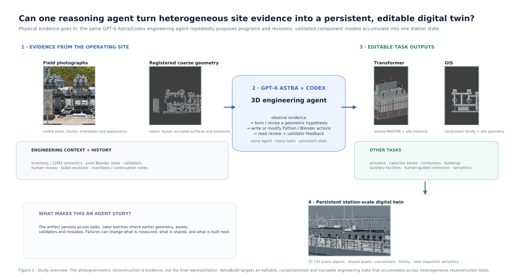
Protocol transparency. One model, one site, one longitudinal run; no matched reruns with another model exist, so comparisons to other systems are architectural, not empirical. Batches are not IID, and no number in this report should be read as a success rate. Behavioral statistics are mined by scripts/analyze_process_behavior.py over the read-only historical folders and stored in release/behavior_analysis.json; filename-level revision tags are a lower bound (D38.1→D38.2 is a release-level revision invisible to that scan). Residuals are internal agreement with the correlated photogrammetric reference.
协议透明化。单模型、单站点、单次纵向运行；不存在与其他模型的对照重跑，因此与其他系统的比较是架构层面的，不是实证层面的。批次非 IID，本报告任何数字都不应被读作成功率。行为统计由 scripts/analyze_process_behavior.py 对只读历史目录挖掘产生，存放于 release/behavior_analysis.json；文件名级修订标记是下界（D38.1→D38.2 属 release 级修订，该扫描不可见）。残差是与相关摄影测量参考的内部一致性。
Each task is a target equipment family, a bounded evidence package, the programmatic action space, and task-native validation criteria. B32 is the observable trace: inherited state, measurement scripts, diagnostics, three geometry revisions, componentized output, eight fixed-camera review sets, an interactive review page, an independent validator, and a continuation record.
每个任务包含一个目标设备族、一个有界证据包、程序化动作空间和任务原生验证标准。B32 是可观测轨迹：继承状态、测量脚本、诊断图、三轮几何修订、部件化输出、8 组固定机位审查、一个交互 review 页面、独立验证器与续作记录。
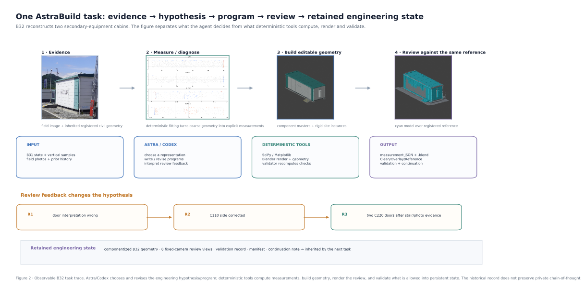
prepare_B32.py hashes and freezes inherited artifactsinputs_B32.jsonB31_vertical_samples.npz + station framechooses separate rectangular fits for C110/C220 and a fit/comparison split选择 C110/C220 分别拟合矩形，并划分拟合/回查域SciPy soft-L1 least squares + Matplotlibwidth / length / yaw / root transform + façade diagnostics + B32_container_measurements.jsoninspect_B32_steps.py creates plan/height diagnosticsB32_source_steps_diagnostic.png; final C110 east door (Y≈−3.90) and two C220 west doors (≈−5.50, +5.32).blend + reusable component .blend + 27 rendersreview_B32.py packages the comparison UIB32_review.html: 8 views, 25 embedded images, slider + 3 display modesvalidate_B32_r3.py recomputes preservation (34,191 inherited objects, 2,953 protected files), façade, door/stair, camera and asset round-trip checksB32_validation_r3.json + manifest + continuation note32 formal batches from B07 through D38 preserve original interactive review pages generated during the experiments. These pages are part of the evaluation instrument, not its documentation: they are what the agent produced for review, and what review evidence later modified. A folder-level scan finds a 33rd page belonging to C37, whose failed-camera variant was superseded by D37 and is therefore outside the formal catalog.B07 至 D38 的 32 个正式批次保留了实验当时生成的原始交互 review 页面。这些页面是评估仪器的一部分而非文档：它们是智能体产出供审查的对象，也是后来审查证据所修改的对象。目录级扫描还能找到第 33 个页面，属于 C37；其失败相机变体已被 D37 取代，因此不在正式目录内。
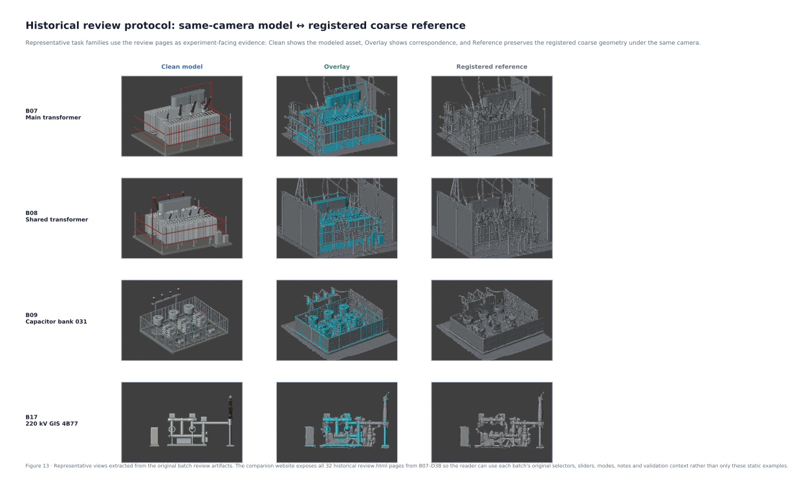
Referenceregistered source/coarse evidence under the comparison camera同一对照相机下的注册粗模/参考证据
 Clean
Cleanthe modeled component without comparison geometry不叠加参考几何的模型结果
 Overlay
Overlaymodel/reference inspection under the same camera同机位模型/参考叠加审查
 Profiles
Profilespoint cloud sections and fitted axes/paths used to choose geometry用于选择几何表示的点云剖面与拟合轴/路径
 Preflight
Preflighttests a representation before committing it to the station scene在写入整站前检验表示假设是否成立
 Diagnostic
Diagnostictask-specific route/topology evidence for connected systems连接系统所需的路由/拓扑专项诊断
The recurring core freezes inherited state, extracts a registered local reference, inspects and plans, builds, renders review evidence, validates, and externalizes memory. Operators — measurement/profile fitting, route diagnostics, coverage reasoning, human-markup registration — activate only when the geometry or a failure demands them. The stable core carries state; the operators carry judgment calls.反复出现的核心流程是：冻结继承状态、提取注册局部参考、检查与规划、构建、渲染审查证据、验证并外化记忆。算子（测量/剖面拟合、路由诊断、覆盖推理、人工标记配准）仅在几何或失败需要时启用。稳定的核心承载状态，算子承载判断。
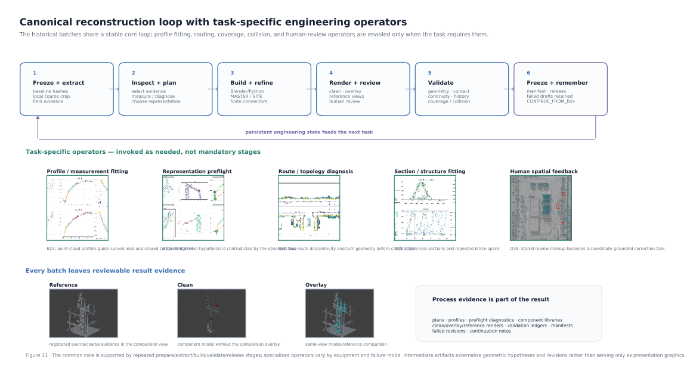
Operator prevalence from a filename-level audit of the 40-dossier process catalog (further: plan 19, measure 17, inspect 16, refine 16, fit 13, render 11, review 10; single-digit connect/collision/discover/features/deliver). These are workflow-record counts, not task success rates; the scope differs from the 36-batch audit cited in earlier drafts.算子频次来自对 40 份 dossier 过程目录的文件名级审计（其余：plan 19、measure 17、inspect 16、refine 16、fit 13、render 11、review 10；connect/collision/discover/features/deliver 为个位数）。这些是工作流记录计数，不是任务成功率；其口径与早期稿件引用的 36 批次审计不同。
38 core batches span 12 task families at one operating substation. Later tasks inherit geometry, reusable assets, validators, and recorded failures from earlier ones; we report behavioral and task-native evidence, and no number here is a success rate.
38 个核心批次覆盖同一运行变电站的 12 个任务族。后续任务继承前序的几何、可复用资产、验证器与已记录失败；我们报告行为与任务原生证据，本页任何数字都不是成功率。
The sequence also records a change in reconstruction scope. B01–B19 concentrate on individual devices and reusable equipment families. B20–B30 add explicit bus and conductor connections and use coverage analysis to identify unresolved geometry. B31–D38 close civil and auxiliary structures and incorporate reviewer-identified omissions. D40 preserves geometry while changing presentation materials, and D41 adds transformer inspection semantics.
任务序列还记录了重建范围的变化。B01–B19 主要处理单体设备和可复用设备族；B20–B30 加入显式母线与导线连接，并使用覆盖分析定位未解决几何；B31–D38 完成土建与辅助设施，并处理审查者指出的遗漏；D40 在保持几何不变的情况下修改展示材质；D41 增加主变巡检语义。

local fitting · pose · holdout validation局部拟合 · 位姿 · 留出验证
B01: 4.8 / 7.3 / 5.1 cm → fail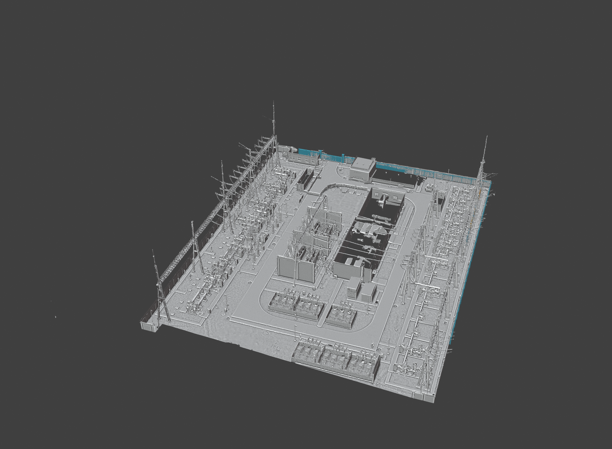
large civil geometry大型土建几何
7.87 m → 0.015 m*
complex assembly · shared MASTER复杂总成 · 共享 MASTER
MASTER → T1 / T2
repeated local assemblies重复局部总成
18 lanes · 0.6–2.4 cm*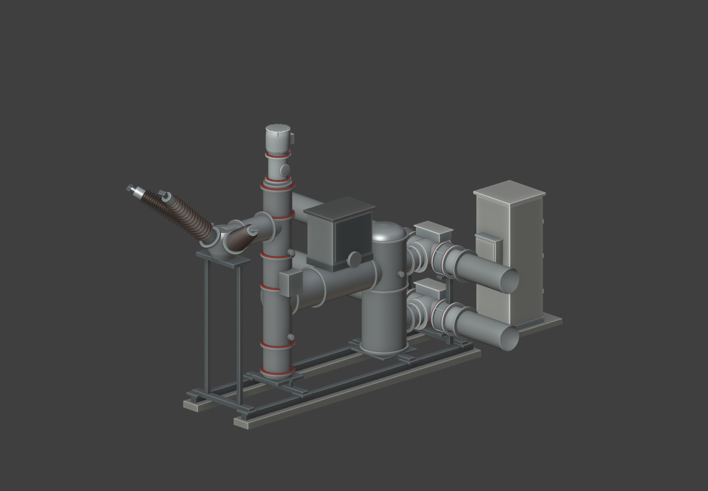
families · variants · reuse设备族 · 变体 · 复用
B13: 7 GIS sets · ≈2,400 meshescomplex topology · reuse across related families复杂拓扑 · 跨设备族复用
B17: 50 / 75 pass · 25 retained
connectivity · flexible paths连接关系 · 柔性路径
≈88.8 m busbar · endpoint ≈1e-6 m
large structured civil model大型结构化土建模型
946 components · ≈10,182 m²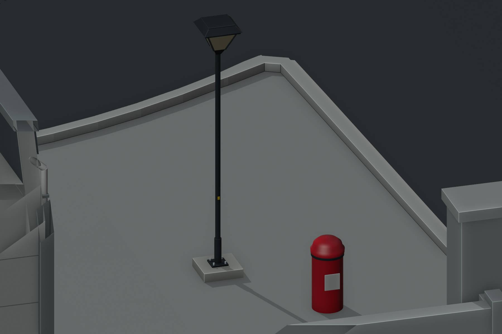
CCTV · fence · floodlights · manholesCCTV · 围栏 · 投光灯 · 井盖
B35: closure after multiple revisions
review → coordinates → rebuild审查 → 坐标 → 补建
D38 registration NCC 0.94 / 0.92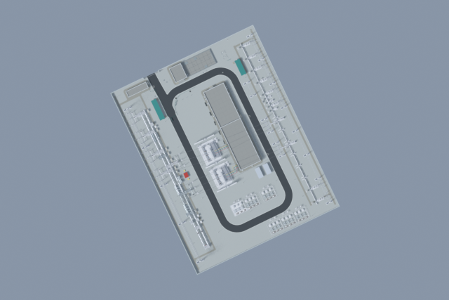
appearance changes · geometry invariant外观变化 · 几何保持不变
37,153 objects unchanged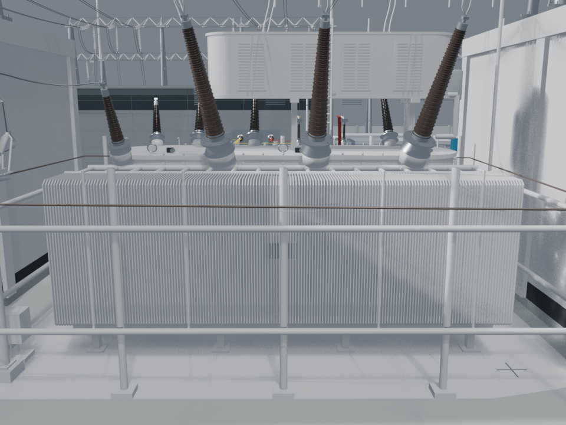
augmentation with addressable inspection parts可寻址部件语义增强
79 meshes · 17 classes × T1/T2* All residual values are internal agreement with the correlated photogrammetric reference domains used during reconstruction — not independent survey accuracy.
* 所有残差数值均为与重建过程中使用的（相关）摄影测量参考域的内部一致性——不是独立测绘精度。
| Task任务 | Primary evidence主要证据 | Representation / challenge表示 / 难点 | Native evidence任务原生证据 | What changed后续变化 |
|---|---|---|---|---|
| Arrester | photo + local coarse | local pose / shaft | B01 RMS 4.8/7.3/5.1 cm → failed screen (retained) | B02 separates fitting and holdout domains |
| Transformer | photos + coarse + user equivalence | complex assembly / reuse | bank median ≈0.01 m; T2-front P95 0.62 m tail retained | B08 promotes one assembly to shared MASTER |
| Capacitor bank | photos + local coarse | repeated assembly | 18 lane medians 0.6–2.4 cm | repetition becomes explicit structure |
| 110 kV GIS | photos + local coarse | family / variants | B13: 7 sets, ≈2,400 expanded meshes | reuse expands across the equipment family |
| 220 kV GIS | photos + coarse + prior masters | topology / finite geometry local to each installation | B17: 50/75 checks pass, 25 retained non-pass | B15/B17-era revisions refine MASTER/site boundary |
| Bus + conductors | coarse + installed equipment | connectivity / flexible paths | ≈88.8 m busbar; endpoint continuity ≈1e-6 m | scene becomes a connected system |
| Coverage completion | coarse occupancy in selected elevated regions | unknown omissions | >1 m gap 78.8% → 14.6% (audited regions) | task selection changes from inventory to coverage |
| Civil | coarse + review views | building / ground / perimeter | 946-component building; ≈10,182 m² ground; wall-domain RMS 1.8–3.2 cm | station envelope closes |
| B36 omission recovery | human overhead review + history | missing bus rack / routing | multiple revisions; final segment moved 0.16 m | human feedback becomes reconstruction trigger |
| D38 correction | 2D markup + review image mapping | false objects + missing GIS/fire infrastructure | NCC 0.94/0.92; D38.1 → D38.2 orientation correction | quarantine + rebuild + semantic coordinate fix |
| D40 | D38.2 geometry + new materials | presentation layer change | 37,153 objects / 29,986,649 vertices invariant | appearance decoupled from geometry claim |
| D41 | 12MZ semantic source + B08 transformer | inspection accessory augmentation | 79/79 meshes · 17/17 selected classes × T1/T2 | geometry becomes addressable for inspection |
Inventory names, 12MZ groups, and inspection concepts were attached to geometry with explicit accounting: 151 devices in the part map, 76 of 106 official names attached, 30 deliberately left unmatched. A later semantic audit caught naïve string/box attachments and revised them.
台账名称、12MZ 分组与巡视概念以显式记账方式附着到几何：部件图含 151 台设备，106 个官方名称中 76 个完成附着，30 个有意留作未匹配。后续语义审计发现了朴素的字符串/包围盒附着并予以修订。
Where the agent compiled a local registered reference and fitted parametric envelopes — walls (east-wall median 7.87 m→0.015 m), capacitor lanes (18 medians 0.6–2.4 cm), building wall domains (RMS 1.8–3.2 cm), B32 cabins — geometry lands at centimeter-level internal agreement. The fits are deterministic; the agent's contribution is deciding what to fit, on which domain, with which split.
凡智能体编译了局部注册参考并拟合参数化包络之处——围墙（东墙中位数 7.87 m→0.015 m）、电容器阵列（18 个中位数 0.6–2.4 cm）、建筑墙面域（RMS 1.8–3.2 cm）、B32 设备舱——几何均达到厘米级内部一致性。拟合是确定性计算；智能体的贡献在于决定拟合什么、在哪个域上、按什么划分。
Door count/side/position in B32 required R1→R2→R3 corrections driven by same-camera review; the B01 arrester failure came from accessory geometry contaminating the comparison domain; T2's front retains a P95 0.62 m residual tail that summary statistics would hide. Detail errors are semantic-perceptual (what is this feature?), not numeric.
B32 门的数量/朝向/位置需要同机位审查驱动的 R1→R2→R3 修订；B01 避雷器失败源于附件几何污染比较域；T2 正面保留着 P95 0.62 m 的残差尾部，汇总统计会将其掩盖。细节错误是语义—感知性的（这个结构是什么？），而非数值性的。
Bus/conductor systems required route diagnostics and endpoint-continuity checks (B20; continuity ≈1e-6 m); unknown omissions required the coverage audit as an active sensor (B25/B26). Neither emerges from per-device fitting.
母线/导线系统需要路由诊断与端点连续性检查（B20；连续性 ≈1e-6 m）；未知遗漏需要把覆盖审计当作主动传感器（B25/B26）。二者都不会从逐设备拟合中自发产生。
Median / p90 / p95 = 3.6 / 8.4 / 11.6 cm against the same photogrammetric mesh used as reconstruction evidence — internal agreement, not independent survey accuracy. The 5 cm screening ledger retains 149 passing / 101 non-passing items (a screening ledger, not a success rate). The coverage audit of selected high regions moved the >1 m unexplained-sample fraction from 78.8% to 14.6% (audited regions, not whole-station completeness).相对于同时作为重建证据的同一摄影测量网格，median / p90 / p95 = 3.6 / 8.4 / 11.6 cm——内部一致性，不是独立测绘精度。5 cm 筛查台账保留 149 项通过 / 101 项未通过（筛查台账，不是成功率）。对选定高区的覆盖审计将 >1 m 未解释采样比例从 78.8% 降至 14.6%（审计区域，非整站完备性）。
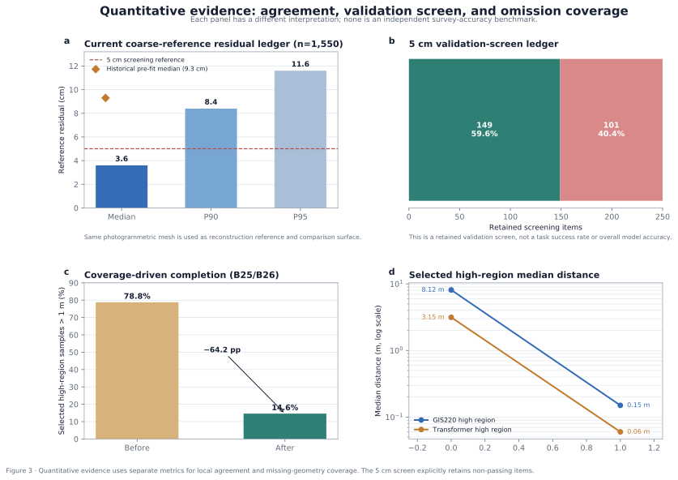
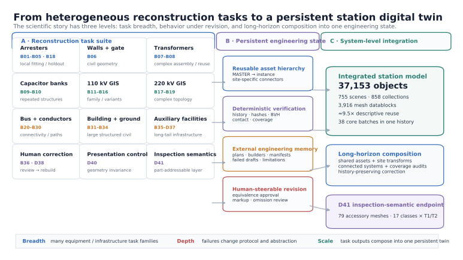
The task suite shows what was built; this section analyzes how the agent behaved. Statistics are mined from the preserved record (release/behavior_analysis.json); failure-mode and adaptation labels are manual annotations of the documented episodes, reported with their sources.
任务集说明建了什么；本节分析智能体的行为方式。统计数字挖掘自冻结记录（release/behavior_analysis.json）；失败模式与适应分类是对已建档事件的人工标注，随来源一并报告。
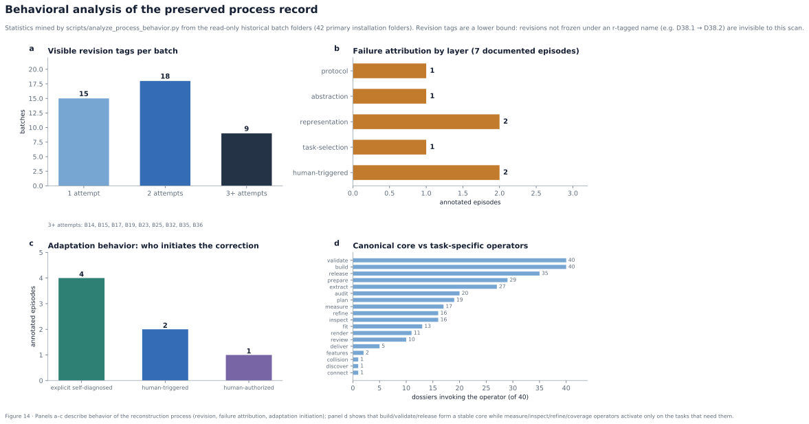
Of 42 primary installation folders, 15 show a single preserved attempt, 18 show two, and 9 (B14, B15, B17, B19, B23, B25, B32, B35, B36) show three or more. A mean attempt count would describe no actual task. The hard tail concentrates on reusable abstractions, flexible/representational geometry, review-heavy detail, and omission recovery.
42 个主安装目录中，15 个只保留单次尝试，18 个保留两次，9 个（B14、B15、B17、B19、B23、B25、B32、B35、B36）保留三次以上。平均尝试次数不对应任何真实任务。硬尾集中在可复用抽象、柔性/表示性几何、审查密集的细节与遗漏恢复上。
Of 7 documented failure episodes, 5 are errors of protocol (B01), abstraction boundary (B15), representation class (B23, D38.1), or task-selection strategy (B25/B26) — not parameter error. In none of them would tuning a dimension have fixed the problem; the fix was to change what was being assumed.
7 个建档失败事件中，5 个属于协议（B01）、抽象边界（B15）、表示类别（B23、D38.1）或任务选择策略（B25/B26）层面的错误——而非参数错误。其中没有任何一个能靠调整尺寸修复；修复方式是改变所作的假设。
Of 7 adaptation episodes, 4 are explicit self-diagnosed observe–diagnose–revise loops preserved as process files (B01→B02, B15, B23, B25/B26), 2 are human-triggered (B36, D38), and 1 required explicit human authorization (B08). We observe no case where a silent, invisible correction would have been acceptable.
7 次适应事件中，4 次是以过程文件保存的显式自诊断“观察—诊断—修订”闭环（B01→B02、B15、B23、B25/B26），2 次由人工触发（B36、D38），1 次需要明确人工授权（B08）。未观察到任何一次可以接受静默无痕修订的情形。
B25/B26 inverted task selection: from "which inventory entry is unresolved?" to "where does the coarse reference contain geometry the model does not explain?". In audited high regions, the >1 m unexplained-sample fraction moved from 78.8% to 14.6%, with the GIS220 median from 8.12 m to 0.15 m and the transformer median from 3.15 m to 0.06 m.
B25/B26 反转了任务选择：从“哪条台账尚未解决？”变为“粗模参考中何处存在模型未解释的几何？”。在受审计的高区，>1 m 未解释采样比例从 78.8% 降至 14.6%，GIS220 中位数从 8.12 m 降至 0.15 m，主变中位数从 3.15 m 降至 0.06 m。
Human input is compact and spatial, never vertex-level: an equivalence authorization (B08), a top-view omission report (B36), marked regions on review images (D38). D38 is the most complete chain: markup registered at NCC ≈0.94/0.92, coordinates inverted, three false cabinet groups quarantined (not deleted), three GIS gaps and the fire-room structures rebuilt — and then D38.1's orientation error caught by overlay review and corrected in D38.2.
人工输入紧凑且空间化，从不触及顶点级：一次同构授权（B08）、一条俯视遗漏报告（B36）、审查图上的标记区域（D38）。D38 是最完整的链条：标记以 NCC ≈0.94/0.92 配准，坐标反算，三组错误柜体被隔离（而非删除），三处 GIS 缺口与消防间结构被补建——随后 D38.1 的朝向错误被叠加审查发现并由 D38.2 修正。
Composing task outputs is not concatenating meshes: shared masters must stay shared only where equivalence holds (B15 is the counterexample), earlier transforms and 2,859+ protected-file hashes must survive later batches, and presentation must stay decoupled from geometry — D40 is validated to leave all 37,153 objects and 29,986,649 vertices unchanged, so a better-looking render cannot be misread as new geometry.
组合任务输出不是拼接网格：共享 master 仅在同构成立处保持共享（B15 是反例）；早期变换与 2,859+ 个受保护文件哈希必须在后续批次中存活；展示必须与几何解耦——D40 经验证保持全部 37,153 个对象与 29,986,649 个顶点不变，使更好看的渲染不会被误读为新几何。
This is the instrument panel of the evaluation: the actual review pages the agent produced during batches B07–D38, embedded unmodified — original selectors, split sliders, and batch-specific caveats included. They are what review evidence (including human markup in D38) later modified.
这是本评估的仪器面板：智能体在 B07–D38 各批次中实际产出的审查页面，原样嵌入——保留原始选择器、滑动对照和各批次自己的限制说明。后来的审查证据（包括 D38 的人工标记）正是在这些页面上发挥作用的。
Each review page embeds the Blender renders produced by its historical batch together with the controls used for inspection. B07 includes the earlier and revised transformer candidates; B08 switches between T1 and T2; B09 and B10 provide per-bank selectors and Clean/Compare/Overlay/Reference modes. GIS, conductor, civil, and correction batches use task-specific directions and diagnostic views.
每个 review 页面都内嵌对应历史批次生成的 Blender 渲染以及当时用于审查的控件。B07 包含早期与修订后的主变候选模型，B08 可在 T1 与 T2 之间切换，B09 和 B10 提供逐电容器组选择及 Clean/Compare/Overlay/Reference 模式；GIS、导线、土建和纠错批次则使用各自的方向与专项诊断视图。
The folder-level scan finds 33 review pages; the 33rd belongs to C37, whose failed-camera variant was superseded by D37 and which is therefore outside the formal catalog of 32. Deep link example: ?review=B32.目录级扫描共发现 33 个 review 页面；第 33 个属于 C37，其失败相机变体已被 D37 取代，因此不在 32 个正式目录内。深链示例：?review=B32。
The two videos report appearance and assembly scale at station level; quantitative claims remain tied to the task-native checks above.
两段视频用于报告整站层面的外观与装配规模；定量结论仍以此前定义的任务原生检查为依据。
Each dossier links a formal batch to its result views, intermediate diagnostics, method stages, and frozen plan, validation, manifest, or continuation records where available — the observable decision trail behind every behavioral claim in §4.
每份档案将一个正式批次与其结果视图、中间诊断、方法阶段，以及可用的 plan、validation、manifest 或 continuation 冻结记录对应起来——§4 每条行为结论背后的可观测决策轨迹。
Loading historical process catalog…正在读取历史过程目录…
In a non-IID longitudinal study the episodes are the evidence. Seven documented failure episodes, annotated by the layer at which the error lived; each episode stated as trigger → diagnosis → revision → lesson.
在非 IID 的纵向研究中，事件本身就是证据。7 个建档失败事件按错误所在层次标注；每个事件按 触发 → 诊断 → 修订 → 教训 陈述。
| Failure layer失败层次 | Episodes事件 | Observable evidence可观测证据 | Response响应 |
|---|---|---|---|
| protocol协议层 | B01 | held-out cylindrical-domain RMS ≈0.048/0.073/0.051 m violates the 5 cm screen; comparison domain mixed target shaft with accessory geometry留出圆柱域 RMS ≈0.048/0.073/0.051 m 违反 5 cm 筛查；比较域混入了目标柱体与附件几何 | B02 separates fitting and holdout regions; revised metric declared not directly comparable to B01B02 分离拟合域与留出域；修订后指标明确声明与 B01 不可直接比较 |
| abstraction抽象层 | B15 | neighbor-contaminated measurements; shared bus-spool master overlapped installations with different physical extents测量被邻近设备污染；共享母线 master 与物理长度不同的安装位发生重叠 | measurement method revised; finite site-specific geometry removed from the shared master; obsolete supports archived, not overwritten修订测量方法；有限站点几何移出共享 master；废弃支撑归档而非覆盖 |
| representation表示层 | B23 · D38.1 | straight-lead hypothesis contradicted by a measured ≈0.5 m mid-span bow; a registration yaw mistaken for equipment orientation直线引线假设被实测约 0.5 m 跨中弯曲否定；配准偏航角被误当作设备朝向 | curved path fitted through r1/r2/r3; D38.2 corrects the orientation semantics, intermediate error preserved经 r1/r2/r3 拟合曲线路径；D38.2 修正朝向语义，中间错误被保留 |
| task-selection任务选择层 | B25/B26 | structures can be absent from the model while their inventory entry appears resolved结构可能在台账看似已解决的情况下仍缺失于模型 | coverage audit becomes a task-selection signal; >1 m unexplained fraction 78.8% → 14.6% in audited regions覆盖审计成为任务选择信号；受审计区域 >1 m 未解释比例 78.8% → 14.6% |
| human-triggered人工触发 | B36 · D38 | reviewer reports missing low bus racks; marked review images (NCC ≈0.94/0.92) identify three false cabinet groups审查者报告低层母线架缺失；标记审查图（NCC ≈0.94/0.92）定位三组错误柜体 | history search + multi-revision rebuild; false objects quarantined (not deleted), missing GIS/fire structures rebuilt历史追溯 + 多轮修订补建；错误对象隔离（而非删除），缺失 GIS/消防设施补建 |
Five of seven episodes are hypothesis-level errors (protocol, abstraction, representation, task-selection); two are omissions surfaced by human review. Labels are manual annotations of the documented episodes, embedded with sources in the mining script.7 个事件中 5 个是假设层错误（协议、抽象、表示、任务选择），2 个是人工审查发现的遗漏。标签是对建档事件的人工标注，随来源嵌入挖掘脚本。
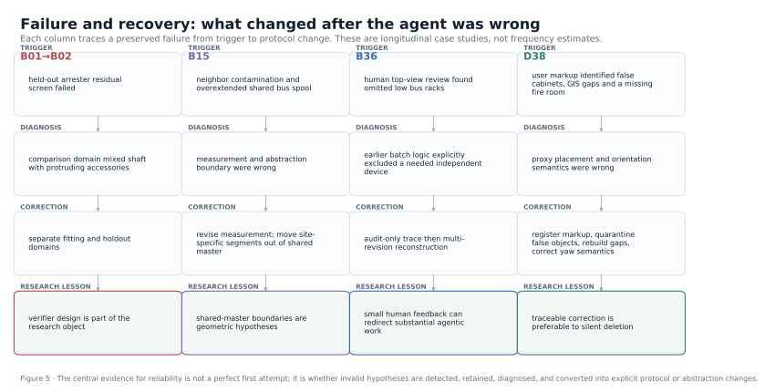
Trigger: held-out RMS 4.8/7.3/5.1 cm fails the 5 cm screen after software checks passed. Diagnosis: the comparison domain mixes the target shaft with protruding accessories. Revision: B02 separates fitting and holdout regions; the failed batch is retained.
触发：软件检查通过后，留出域 RMS 4.8/7.3/5.1 cm 未通过 5 cm 筛查。诊断：比较域混入了目标柱体与凸出附件。修订：B02 分离拟合域与留出域；失败批次被保留。

Trigger: user authorizes treating the two transformer assemblies as equivalent. Revision: a shared MASTER with T1/T2 site instances; later structural edits propagate consistently. Lesson: reuse is a hypothesis about equivalence — adopted deliberately, with its counter-evidence (T2-front P95 ≈0.62 m tail) retained.
触发：用户明确授权将两台主变视为同构。修订：建立共享 MASTER 与 T1/T2 站点实例，后续结构编辑一致传播。教训：复用是关于同构的假设——经审慎采纳，并保留其反证（T2 正面 P95 ≈0.62 m 尾部）。
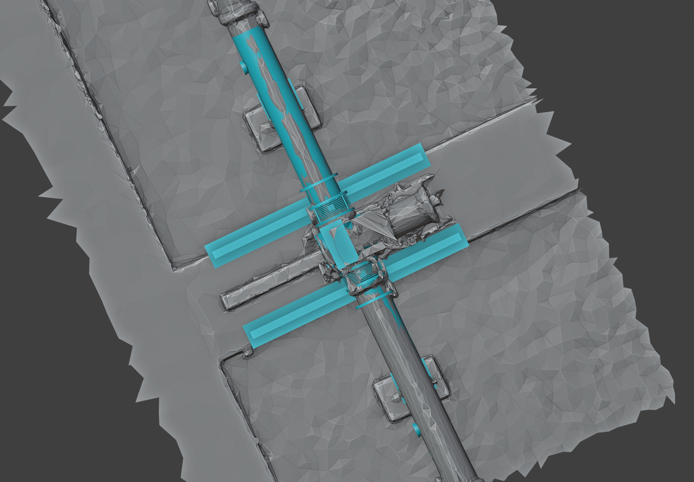
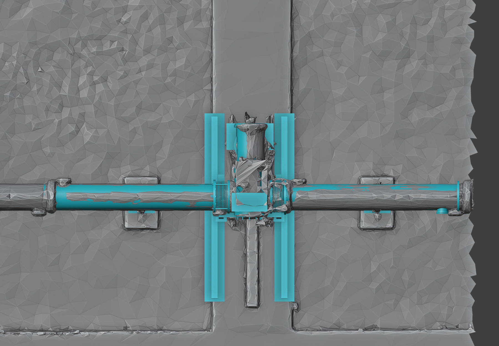
earlierrevisedTrigger: neighbor-contaminated measurements; shared bus geometry overlapping adjacent equipment. Diagnosis: finite site-specific geometry inside a shared master. Revision: measurement method and MASTER/site boundary revised together; obsolete supports archived, not overwritten.
触发：测量被邻近设备污染；共享母线几何与相邻设备重叠。诊断：共享 master 中包含了有限的站点特有几何。修订：测量方法与 MASTER/site 边界同时修订；废弃支撑归档而非覆盖。

 beforeafter
beforeafterTrigger: inventory lists cannot surface unknown omissions. Diagnosis: the reference mesh contains occupancy the model does not explain. Revision: the coverage audit becomes a task-selection signal — the reference geometry became a sensor (Finding 4).
触发：台账无法暴露无人记录的遗漏。诊断：参考网格中存在模型未解释的占据。修订：覆盖审计成为任务选择信号——参考几何变成了传感器（发现 F4）。

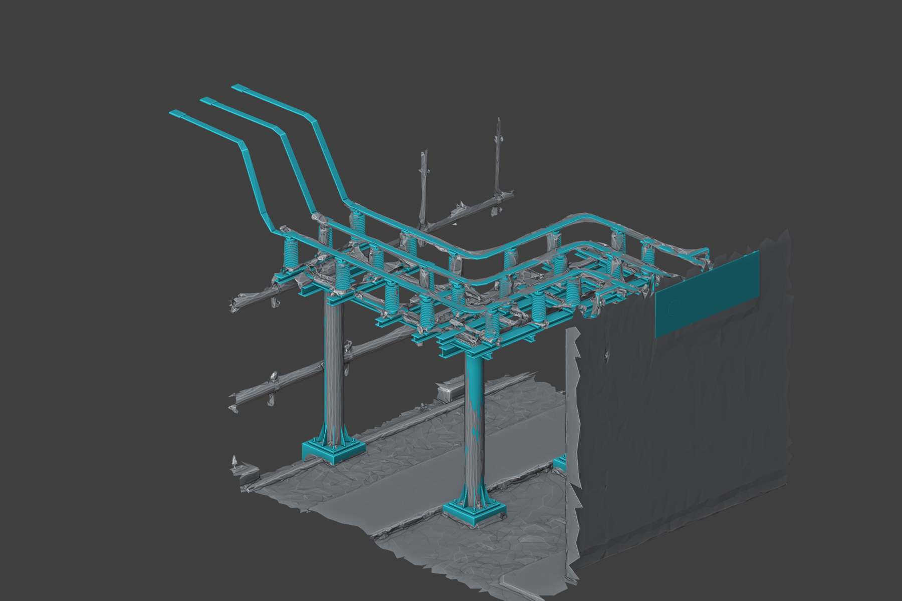
cleanoverlayTrigger: a top-view reviewer reports missing low bus racks — four words' worth of spatial signal. Diagnosis: audit-only history search traces the omission to an earlier scope decision. Revision: three revisions — a non-finite path section, a section-orientation fix, a 0.16 m shift to avoid a fire pipe.
触发：俯视审查者报告低层母线架缺失——四个字的空间信号。诊断：只读历史追溯将遗漏归因于早期一次范围决策。修订：三轮修订——修复非有限路径段、修正截面朝向、外移 0.16 m 避让消防管。

Trigger: marked review images. Diagnosis: registration NCC ≈0.94/0.92 → coordinate inversion → three false cabinet groups identified. Revision: quarantine (not delete) + rebuild GIS/fire structures; D38.1's orientation error is then caught by overlay review and corrected in D38.2. Both errors remain in history.
触发：带标记的审查图。诊断：配准 NCC ≈0.94/0.92 → 坐标反算 → 定位三组错误柜体。修订：隔离（而非删除）+ 补建 GIS/消防结构；随后 D38.1 的朝向错误被叠加审查发现并由 D38.2 修正。两个错误都留在历史中。
Detailed D38 record ↓D38 详细记录 ↓The most complete human–agent episode in the record: a correction sequence initiated by annotated review images rather than direct mesh editing — and itself corrected once (D38.1 → D38.2).
记录中最完整的人—智能体事件：由带标记审查图触发、而非人工直接编辑网格的纠错过程——且其自身也被纠正过一次（D38.1 → D38.2）。

Marked review images indicate false cabinets, missing GIS, and fire infrastructure.审查图标出错误柜体、缺失 GIS 与消防设施。

Template registration reaches NCC 0.94/0.92; marked pixels are inverted into model-world regions and false generated groups are identified.模板配准 NCC 达 0.94/0.92；标注像素被反算到模型世界坐标，并定位错误生成对象。

Nine false cabinet components move to quarantine; GIS/fire structures are rebuilt; D38.1’s orientation interpretation is corrected in D38.2.9 个错误柜体部件被移入隔离集合；GIS/消防设施被补建；D38.1 的朝向解释在 D38.2 中再次纠正。
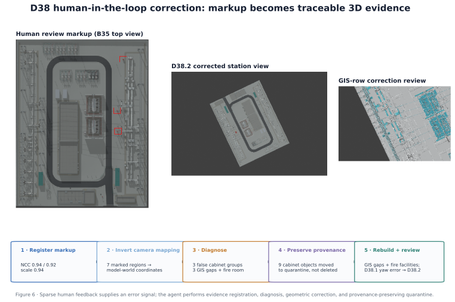
Composition is a separate capability (Finding 6): shared masters must stay shared only where equivalence holds, earlier transforms and protected artifacts must survive later batches, and presentation must stay decoupled from geometry.
组合是独立的能力考验（发现 F6）：共享 master 仅在同构成立处保持共享，早期变换与受保护产物必须在后续批次中存活，展示必须与几何解耦。
The record shows this discipline holding at scale: 2,859+ protected-file hashes by the B35-era chain; B32's validator checks 34,191 inherited objects and 2,953 protected files; failed variants are preserved rather than cleaned up. At the D38.2/D40-equivalent layer the composed project contains 37,153 objects, 755 scenes, 858 collections, 3,916 mesh datablocks, and 29,986,649 vertices — a descriptive object-to-mesh reuse ratio of ≈9.5×. Reconstructed coverage includes 48 arrester bodies, 8+3 GIS bays, two main transformers, six capacitor groups, ≈88.8 m of busbar, 804 insulator discs, ≈10,182 m² of ground surface, and a 946-component main building. These counts demonstrate the breadth of one persistent process; they do not imply that every physical object is independently verified.
记录显示这种纪律在规模下成立：B35 时期链条已有 2,859+ 个受保护文件哈希；B32 的验证器检查 34,191 个继承对象与 2,953 个受保护文件；失败变体被保留而非清理。D38.2/D40 等价层的组合工程包含 37,153 个对象、755 个 scene、858 个 collection、3,916 个 mesh datablock 和 29,986,649 个顶点——描述性对象/网格复用比约 9.5×。重建覆盖范围包括 48 支避雷器本体、8+3 个 GIS 间隔、两台主变、六组电容器、约 88.8 m 母线、804 片绝缘子、约 10,182 m² 地坪与 946 部件的主控楼。这些数量说明单个持续过程的操作广度，并不意味着每个物理对象都经过独立验证。
Version boundary. D38.2 — principal reconstructed station geometry after the correction loop; D40 — material/presentation layer, validated to preserve geometry, transforms, object counts, and vertex counts; D41 — additive inspection-semantic accessory layer. The layering prevents a better-looking render from being misreported as new geometry, and prevents later semantic additions from being back-projected into earlier results.
版本边界。D38.2——纠错循环后的主站几何；D40——材质/展示层，经验证保持几何、变换、对象数与顶点数不变；D41——追加式巡检语义附件层。分层防止更好看的渲染被误报为新几何，也防止后续语义增补被回溯计入早期结果。
D41 is the additive research endpoint: 79 accessory meshes covering 17 selected inspection-relevant part classes, aligned to the B08 tank frame, instantiated into both T1 and T2, validated ok=true — after the main geometry stabilized, not by rewriting earlier history.
D41 是追加式研究终点：79 个附件网格覆盖 17 类选定巡检相关部件，对齐 B08 油箱坐标系，实例化到 T1 与 T2，验证 ok=true——在主站几何稳定之后追加，而非重写早期历史。
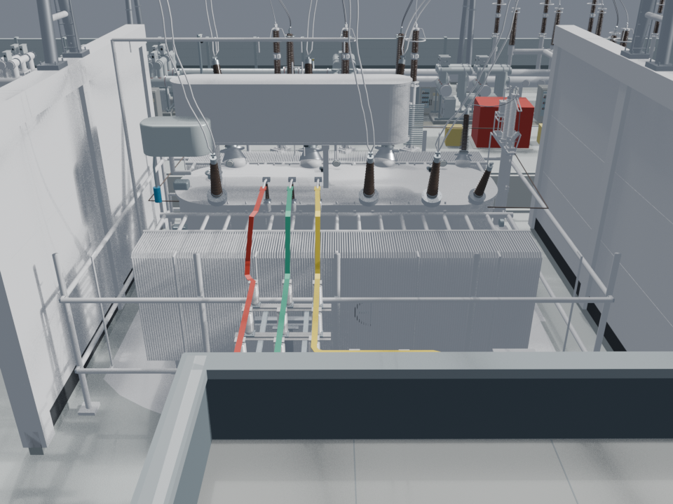
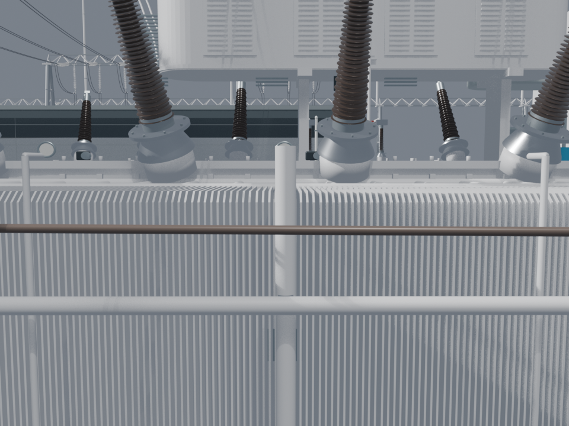
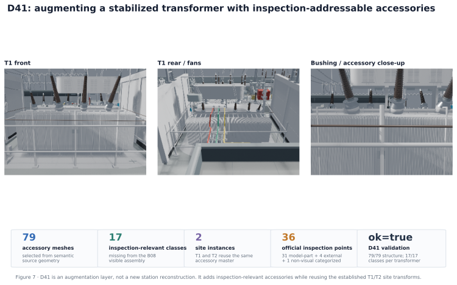
Claims are graded by what the preserved record can carry.
结论按冻结记录能够支撑的强度分级。
A general-purpose reasoning model, inside a deterministic evidence/validation harness, can operate as a persistent 3D engineering agent across 12 heterogeneous task families at one real industrial site. The behavioral specifics matter more than the summary: it revises hypotheses at the protocol, abstraction, representation, and task-selection layers when evidence contradicts them (F1–F4); it converts sparse human spatial signals into verified multi-step corrections (F5); and its task outputs compose into one editable, semantically extensible station model (F6).
在确定性证据/验证 harness 内，一个通用推理模型能够在真实工业场站上跨 12 个异构任务族充当持续三维工程智能体。比总述更重要的是行为细节：它会在证据否定假设时修订协议、抽象、表示与任务选择层的假设（F1–F4）；能将稀疏人工空间信号转化为经过验证的多步纠错（F5）；其任务输出能组合成一个可编辑、可语义扩展的整站模型（F6）。
Full autonomy — human steering is material and documented (B08, B36, D38). Survey-grade accuracy — all residuals are internal agreement with the correlated photogrammetric reference; no independent survey exists. Model superiority — no matched reruns with another model, a specialized 3D pipeline, or a human CAD baseline were performed. Cross-site generality — one substation, one data-acquisition protocol. The analogy to embodied-agent evaluations is an analogy of reporting structure, not of statistics: these are not repeated randomized episodes, and the validators are heterogeneous by design.
完全自主——人工引导是实质性且有记录的（B08、B36、D38）。测绘级精度——所有残差均为与相关摄影测量参考的内部一致性，不存在独立测绘。模型优越性——未与其他模型、专用三维流水线或人工 CAD 基线做对照重跑。跨站泛化——单变电站、单数据采集协议。与具身智能体评估的类比是报告结构上的类比，不是统计上的类比：这些不是重复随机试验，验证器也是按任务异构设计的。
Matched reruns under the same harness with a second model; an independent LiDAR/total-station reference on a subset of equipment; a second site; per-batch cost ledgers (tokens, wall-clock, human minutes), which the historical record does not contain and which future controlled studies should freeze along with model/version provenance.
同一 harness 下用第二个模型做对照重跑；对部分设备做独立 LiDAR/全站仪参考测量；第二个站点；逐批次成本台账（token、墙钟时间、人工分钟数）——历史记录不包含这些，未来的受控研究应将其与模型/版本 provenance 一并冻结。
The current record supports a single-site longitudinal behavioral analysis and leaves several questions unresolved.
当前记录支持单站点纵向行为分析，同时保留若干尚未解决的问题。
Single-site external validity. All task families come from one substation; diversity within one site does not establish transfer.
单站点外部效度。所有任务族来自同一座变电站；站内多样性不能证明可迁移性。
No independent survey reference. Headline centimeter-scale residuals compare against the same mesh that guided reconstruction. They are not independent survey accuracy.
无独立测绘参考。头条的厘米级残差对照的是同时参与重建的同一网格，不是独立测绘精度。
Heterogeneous task-native validators. Appropriate for an engineering case study; it prevents reduction to one stationary benchmark success rate.
验证器任务异构。这适合工程案例研究，但也意味着无法归约为单一平稳的 benchmark 成功率。
Human steering is material. Equivalence authorization, omission review, image markup, and semantic audit all influenced the trajectory.
人工引导是实质性的。同构授权、遗漏审查、图像标记与语义审计都影响了轨迹。
Owner-confirmed model provenance. Historical logs do not freeze model identifier or reasoning effort. Future studies should log model/version, reasoning setting, tool versions, evidence manifest, token usage, wall-clock, human interventions, and output hashes per run.
模型 provenance 为负责人确认。历史日志未冻结模型标识与推理强度。未来研究应按运行冻结模型/版本、推理设置、工具版本、证据清单、token 用量、墙钟时间、人工干预与输出哈希。
Behavioral mining is filename-level. Revision counts are lower bounds; failure-mode and adaptation labels are manual annotations of documented episodes, reported with their sources, not derived measurements.
行为挖掘是文件名级的。修订计数是下界；失败模式与适应分类是对建档事件的人工标注，随来源报告，而非派生测量。
The entries below correspond to the literature cited in the website text. The manuscript contains the complete bibliography.
以下条目对应网页正文中的文献引用；完整 bibliography 见论文稿。
The publication layer is stored separately from the preserved historical experiment outputs. Behavioral statistics are mined by scripts/analyze_process_behavior.py into release/behavior_analysis.json.
发布层与只读历史实验产物隔离。行为统计由 scripts/analyze_process_behavior.py 挖掘并写入 release/behavior_analysis.json。
Working citation until authorship and venue are finalized.作者与投稿方向确定前的工作引用。
@misc{astrabuild2026,
title = {AstraBuild: Evaluating GPT-6 Astra as a Long-Horizon 3D
Engineering Agent Through Its Process Data},
author = {Project Team},
year = {2026},
note = {Behavioral evaluation report draft and project website}
}metrics.json